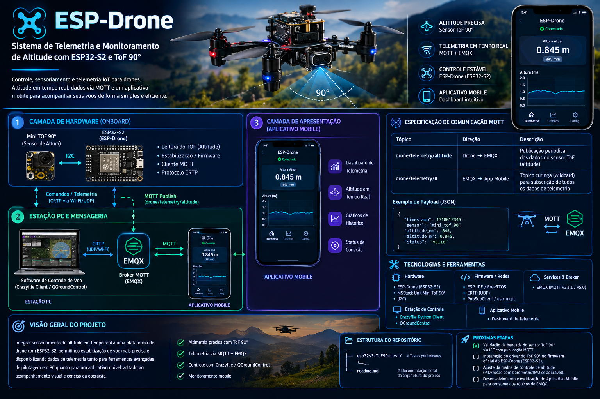

ESP-Drone • Sky Sense
Telemetria de Altitude • Sensoriamento ToF 90° • OTA Centralizado • Edge AI
GitHub
v2.1 Stable
Telemetria de Altitude • Sensoriamento ToF 90° • OTA Centralizado • Edge AI

O ESP-Drone (Sky Sense) é uma plataforma integrada de sensoriamento, telemetria IoT e gestão remota para veículos aéreos não tripulados (drones). Desenvolvido sobre os microcontroladores ESP32-S2 / ESP32-S3, o sistema combina medição óptica precisa de altitude com o sensor Unit Mini ToF 90°, infraestrutura de comunicação em tempo real via broker EMQX Enterprise, orquestração centralizada de firmware Over-The-Air (OTA) com Painel Web e um aplicativo móvel avançado com Edge AI Copilot.
Leitura de distância de alta frequência do sensor Time-of-Flight via barramento I2C, fusão com a malha de estabilização do drone e transmissão simultânea via protocolo CRTP (UDP) e MQTT.
Dashboard Web interativo em Node.js/Express capaz de orquestrar atualizações de firmware em lote para toda a frota de microcontroladores via comando MQTT e download streaming HTTP.
Broker EMQX Enterprise para roteamento de baixa latência em TCP (1883) e WebSockets (8083), com regras de persistência SQL conectadas a banco de dados MariaDB.
Aplicativo móvel multiplataforma (iOS/Android) desenvolvido em React Native e Expo para acompanhamento de telemetria em tempo real, extremos de voo e detecção preditiva de turbulências.
A arquitetura distribui-se em camadas desacopladas e resilientes, garantindo fluxo ininterrupto de dados desde os sensores até a visualização analítica em tempo real:
+---------------------------------------------------------------------------------------------------+
| CAMADA DE HARDWARE (DRONE) |
| |
| +--------------------+ I2C +----------------------------------------------------+ |
| | Mini ToF 90° | ----------------> | ESP32-S3 / ESP32-S2 | |
| | (M5Stack U196) | SDA:04 / SCL:05 | - Aquisição de Altitude em Tempo Real (I2C) | |
| +--------------------+ | - Feedback Visual via LED WS2812B (GPIO 48) | |
| | - Cliente MQTT PubSubClient & HTTPUpdate OTA | |
| +----------------------------------------------------+ |
+-------------------------------------------/--------------------|--------------------\-------------+
/ | \
Telemetria / CRTP via / | \ Publicação MQTT:
Wi-Fi / UDP (Porta 23) / | \ drone/sensor/tof90
/ Sub: drone/cmd/ota \ drone/ota/status
v Pub: drone/ota/status v
+------------------------------------+ | | +---------------------------------+
| ESTAÇÃO PC DE SOLO | | v | BROKER EMQX |
| | | +-----------------------+ | - Listener TCP: 1883 |
| - Software de Pilotagem | | | SERVIDOR CENTRAL | | - Listener WebSocket: 8083 |
| (Crazyflie Client / QGC) | | | (Painel Web / OTA) | | - Autenticação e ACL via MySQL |
| - Calibração de PID e Atitude | | | | +----------------|----------------+
+------------------------------------+ | | - Node.js + Express | |
| | - Dashboard Web :5000 | | Rule Engine (INSERT)
| | - Disparo OTA em Lote | v
| | - Streaming /firmware | +---------------------------------+
| +-----------------------+ | BANCO MARIADB |
| | - iot_db.sensor_tof |
| +---------------------------------+
| |
| MQTT sobre WS | Sub: drone/#
| (Porta 8083) v
+---------------------------------------------------------------------------------------------------+
| CAMADA DE APRESENTAÇÃO & EDGE AI |
| |
| +--------------------------------------+ |
| | DroneTelemetryApp (Expo SDK 58) | |
| | | |
| | - Aba Telemetria (ToF 90°, Gráficos) | |
| | - Extremos de Voo (Altitude Mín/Máx) | |
| | - Motor Edge AI de Estabilidade | |
| | - Relatório de Análise de Pouso/Voo | |
| +--------------------------------------+ |
+---------------------------------------------------------------------------------------------------+
Para eliminar a necessidade de atualizações manuais aparelho a aparelho, toda a infraestrutura de firmware agora é orquestrada centralizadamente pelo Servidor Central (server/) via interface Web unificada.
Interface moderna em http://<IP_SERVIDOR>:5000 com botão de destaque "INICIAR ATUALIZAÇÃO DE FIRMWARE (OTA)" e status instantâneo do sistema.
O servidor publica a instrução no tópico drone/cmd/ota com a URL do binário (ex: http://172.20.10.2:5000/firmware.bin).
O ESP32 recebe o comando, suspende leituras periféricas e baixa os blocos via biblioteca nativa HTTPUpdate, reportando progresso contínuo no tópico drone/ota/status.
Transmissão contínua de eventos via Server-Sent Events (SSE) para o navegador, permitindo acompanhar o log de gravação e resposta de cada nó em tempo real.
[ Operador no Dashboard Web ]
|
| 1. Clica em "Iniciar Atualização de Firmware"
v
[ Servidor Central (Express) ]
|
| 2. Publica JSON no MQTT: drone/cmd/ota { url: "http://.../firmware.bin" }
v
[ Broker EMQX ]
|
| 3. Encaminha para os microcontroladores inscritos
v
[ ESP32-S3 / ESP32-S2 ]
|
| 4. Conecta via HTTP GET no servidor e grava na partição ota_0/ota_1
| 5. Publica progresso percentual: drone/ota/status { progress: 85%, status: "flashing" }
v
[ ESP32 Reinicia Automaticamente no Novo Firmware ]
O DroneTelemetryApp é o aplicativo móvel oficial do projeto, desenvolvido com React Native e Expo (SDK 58). Projetado para operadores em solo, ele se conecta diretamente ao broker EMQX via WebSocket seguro (8083).
Exibe leituras contínuas do sensor ToF 90° em milímetros (mm) e centímetros (cm), cálculo dinâmico de altitude máxima e mínima de voo (com botão de reset), indicador luminoso de conectividade MQTT e gráfico vetorial interativo (SVG) da variação de altitude.
Mecanismo de Edge AI embarcado que realiza cálculo de dispersão, desvio padrão e gradientes bruscos de elevação. Emite pontuação de estabilidade de voo (Score %), detecta anomalias de solo/superfície e gera recomendações automáticas de calibração PID.
EXPO_PUBLIC_MQTT_BROKER_URL, EXPO_PUBLIC_MQTT_TOPIC="drone/#") com sanitização automática para senhas e wildcards que contenham caracteres especiais como #.
+-----------------------+
| Bateria LiPo 1S |
| (3.7V / 300-600mAh) |
+-----------+-----------+
|
+------------------------------------+
| |
v v
+-----------------------+ +-----------------------+
| Regulador LDO | | Drivers / MOSFETs |
| (3.7V -> 3.3V) | | Motores do Drone |
+-----------+-----------+ +-----------+-----------+
| |
| (3.3V Estabilizado) | (Alimentação Direta)
v v
+-------------------------+ +------------------+
| ESP32-S3 / ESP32-S2 | | Motores M1 - M4 |
+------------+------------+ +------------------+
| Barramento I2C
v
+-------------------------+
| Mini ToF 90° (U196) |
| (Sensor de Altitude) |
+-------------------------+
+-----------------------------------+
| ESP32-S3 DevKitC / S2 |
| |
| [3V3] [GND] [IO04] [IO05] |
+---|-------|--------|--------|-----+
| | | |
| | SDA SCL
| | | |
+-------------------+ | | | |
| Mini ToF 90° | | | | |
| (VL53L0X) | | | | |
| [VCC] [GND] | <---+ | | |
| | | | | | |
| +------+-------|-------------+ | |
| | | |
| [SDA]------------|----------------------+ |
| [SCL]------------|-------------------------------+
| |
+-------------------+
| Cor do LED | Estado Operacional | Ação / Descrição |
|---|---|---|
| ● Azul | Inicialização / Gravando OTA | Inicialização de Wi-Fi ou download e gravação de firmware em andamento. |
| ● Verde | Operação Normal / Sucesso | Conectado ao Wi-Fi e Broker MQTT ou gravação OTA concluída com êxito. |
| ● Vermelho | Falha de Sistema / Erro | Erro no barramento I2C, falha de Wi-Fi/MQTT ou erro no pacote OTA. |
A tabela a seguir descreve os tópicos oficiais de mensageria utilizados no ecossistema:
| Tópico | Origem ➔ Destino | Protocolo | Função |
|---|---|---|---|
drone/sensor/tof90 |
ESP32 ➔ EMQX / DB | MQTT (TCP 1883) | Publicação de telemetria de altitude em mm/cm e timestamp. |
drone/# |
EMQX ➔ App Mobile | WebSocket (8083) | Subscrição wildcard consumida pelo aplicativo mobile. |
drone/cmd/ota |
Servidor ➔ ESP32 | MQTT (TCP 1883) | Ordem de início de atualização com URL do binário de firmware. |
drone/ota/status |
ESP32 ➔ Servidor / Clientes | MQTT (TCP 1883) | Reporte de progresso em porcentagem (0-100%) e status de flashing. |
1. Telemetria do Sensor ToF (drone/sensor/tof90):
{
"device_id": "esp32s3_tof90",
"sensor": "U196_ToF90",
"distance_mm": 275,
"distance_cm": 27.5,
"valid": true,
"timestamp": 458920,
"ip": "172.20.10.3",
"version": "1.2.0"
}2. Ordem de Atualização de Firmware (drone/cmd/ota):
{
"action": "update",
"url": "http://172.20.10.2:5000/firmware.bin",
"version": "1.3.0",
"target": "all"
}3. Status de Progresso OTA (drone/ota/status):
{
"device_id": "esp32s3_tof90",
"status": "downloading",
"progress": 68,
"message": "Gravando bloco na Flash (ota_0)"
}